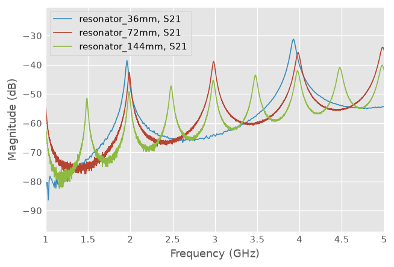
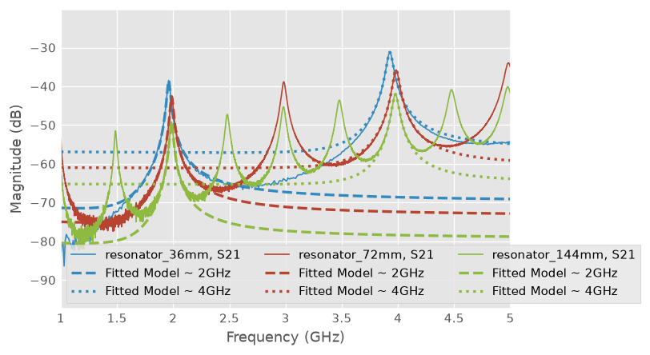
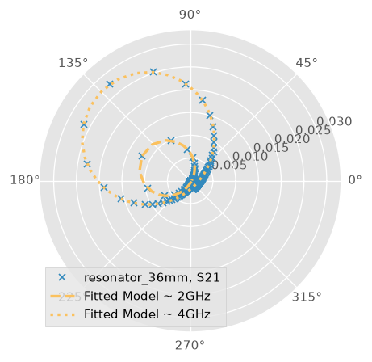
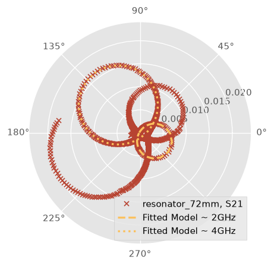

Finding Dielectric Constant and Loss from Resonance Fitting#
In this example, the Q-factors are fitted from S-parameters data measured to characterize PCB laminate materials. The data correspond to a 36, 72 and 144 mm long stripline resonator respectively. We will then deduce the Dielectric permittivity and loss constants.
Fitting Q-factors#
[1]:
import matplotlib.pyplot as plt
import skrf as rf
from skrf.constants import c
from skrf.qfactor import Qfactor
rf.stylely()
[2]:
# Loading the data.
# Setting the frequency unit is optional, just a convenience for displaying results
Reson36 = rf.Network('data/resonator_36mm.s2p', f_unit='GHz')
Reson72 = rf.Network('data/resonator_72mm.s2p', f_unit='GHz')
Reson144 = rf.Network('data/resonator_144mm.s2p', f_unit='GHz')
[3]:
Reson36.plot_s_db(m=1, n=0)
Reson72.plot_s_db(m=1, n=0)
Reson144.plot_s_db(m=1, n=0)

To find the Q-factors of these resonators, we create a Qfactor object from the transmission S-parameters we want to fit.
Note that is there are many resonances close to each other, it is recommended to pass the frequency sub-Networks for the range of frequency of interest, to help the convergence of the fitting algorithm. Here, we are interested in the resonances occurring around 2 and 4 GHz, hence:
[4]:
# Around 2 GHz
QF_36_2GHz = Qfactor(Reson36['1.75-2.25GHz'].s21, res_type='transmission')
QF_72_2GHz = Qfactor(Reson72['1.75-2.25GHz'].s21, res_type='transmission')
QF_144_2GHz = Qfactor(Reson144['1.75-2.25GHz'].s21, res_type='transmission')
# Around 4 GHz
QF_36_4GHz = Qfactor(Reson36['3.75-4.25GHz'].s21, res_type='transmission')
QF_72_4GHz = Qfactor(Reson72['3.75-4.25GHz'].s21, res_type='transmission')
QF_144_4GHz = Qfactor(Reson144['3.75-4.25GHz'].s21, res_type='transmission')
all_QFs = [QF_36_2GHz, QF_72_2GHz, QF_144_2GHz, QF_36_4GHz, QF_72_4GHz, QF_144_4GHz]
[5]:
print(*all_QFs, sep='\n')
Q-factor of Network resonator_36mm. (not fitted)
Q-factor of Network resonator_72mm. (not fitted)
Q-factor of Network resonator_144mm. (not fitted)
Q-factor of Network resonator_36mm. (not fitted)
Q-factor of Network resonator_72mm. (not fitted)
Q-factor of Network resonator_144mm. (not fitted)
Then we fit the Q-factors:
[6]:
[Q.fit() for Q in all_QFs]
print(*all_QFs, sep='\n')
Q-factor of Network resonator_36mm. (fitted: f_L=1.960GHz, Q_L=72.475)
Q-factor of Network resonator_72mm. (fitted: f_L=1.987GHz, Q_L=74.283)
Q-factor of Network resonator_144mm. (fitted: f_L=1.985GHz, Q_L=73.545)
Q-factor of Network resonator_36mm. (fitted: f_L=3.927GHz, Q_L=74.018)
Q-factor of Network resonator_72mm. (fitted: f_L=3.983GHz, Q_L=75.717)
Q-factor of Network resonator_144mm. (fitted: f_L=3.977GHz, Q_L=74.711)
We can create the Networks corresponding to the fitted results to benchmark the model against the measurements:
[7]:
new_freq = rf.Frequency(1, 5, unit='GHz', npoints=1001)
fitted_ntwk_36_2GHz = QF_36_2GHz.fitted_network(frequency=new_freq)
fitted_ntwk_72_2GHz = QF_72_2GHz.fitted_network(frequency=new_freq)
fitted_ntwk_144_2GHz = QF_144_2GHz.fitted_network(frequency=new_freq)
fitted_ntwk_36_4GHz = QF_36_4GHz.fitted_network(frequency=new_freq)
fitted_ntwk_72_4GHz = QF_72_4GHz.fitted_network(frequency=new_freq)
fitted_ntwk_144_4GHz = QF_144_4GHz.fitted_network(frequency=new_freq)
[8]:
Reson36.plot_s_db(m=1, n=0, color='C0')
fitted_ntwk_36_2GHz.plot_s_db(label='Fitted Model ~ 2GHz', lw=2, color='C0', ls='--')
fitted_ntwk_36_4GHz.plot_s_db(label='Fitted Model ~ 4GHz', lw=2, color='C0', ls=':')
Reson72.plot_s_db(m=1, n=0, color='C1')
fitted_ntwk_72_2GHz.plot_s_db(label='Fitted Model ~ 2GHz', lw=2, color='C1', ls='--')
fitted_ntwk_72_4GHz.plot_s_db(label='Fitted Model ~ 4GHz', lw=2, color='C1', ls=':')
Reson144.plot_s_db(m=1, n=0, color='C2')
fitted_ntwk_144_2GHz.plot_s_db(label='Fitted Model ~ 2GHz', lw=2, color='C2', ls='--')
fitted_ntwk_144_4GHz.plot_s_db(label='Fitted Model ~ 4GHz', lw=2, color='C2', ls=':')
plt.gca().legend(ncol=3)
[8]:
<matplotlib.legend.Legend at 0x72264cb4a6f0>

Another way to represent the results is to use polar planes:
[9]:
fig, ax = plt.subplots(subplot_kw={'projection': 'polar'})
Reson36.plot_s_polar(m=1, n=0, ax=ax, ls='', marker='x', ms=5)
fitted_ntwk_36_2GHz.plot_s_polar(ax=ax, label="Fitted Model ~ 2GHz", lw=2, ls='--', color='C3')
fitted_ntwk_36_4GHz.plot_s_polar(ax=ax, label="Fitted Model ~ 4GHz", lw=2, ls=':', color='C3')

[10]:
fig, ax = plt.subplots(subplot_kw={'projection': 'polar'})
Reson72.plot_s_polar(m=1, n=0, ax=ax, ls='', marker='x', ms=5, color='C1')
fitted_ntwk_72_2GHz.plot_s_polar(ax=ax, label="Fitted Model ~ 2GHz", lw=2, ls='--', color='C3')
fitted_ntwk_72_4GHz.plot_s_polar(ax=ax, label="Fitted Model ~ 4GHz", lw=2, ls=':', color='C3')

[11]:
fig, ax = plt.subplots(subplot_kw={'projection': 'polar'})
Reson144.plot_s_polar(m=1, n=0, ax=ax, ls='', marker='x', ms=5, color='C2')
fitted_ntwk_144_2GHz.plot_s_polar(ax=ax, label="Fitted Model ~ 2GHz", lw=2, ls='--', color='C3')
fitted_ntwk_144_4GHz.plot_s_polar(ax=ax, label="Fitted Model ~ 4GHz", lw=2, ls=':', color='C3')

Increasing Accuracy#
If you want to get the best accuracy in the calculation of the Q-factors, it’s recommended to repeat the fitting a second time using S-parameters data having the resonance peak at the centre frequency and the span reduced to \(\pm f_L/Q_L\) (cf. [1] page 21). This is justified in two ways:
\(Q_L\) is defined at the resonant frequency \(f_L\)
Limiting the span reduces the effects of other modes, mismatches, and differences between the actual resonator and the lumped-component model for the resonator. It also adds more points near the peak.
The advantage is greatest if the resonance has poor shape, or if there are other modes nearby. Thus, a recommended workflow for optimal accuracy would be to:
Set sweep parameters so the resonance is on the VNA screen
Get Measurements
Fit Q param to deduce \(f_L\)
Set the Centre Freq to \(f_L\)
Set Span to \(2f_L/Q_L\)
Get Measurements
Fit Q param
Calculate Unloaded Q
So, for example:
[12]:
# extracting the subfrequency range of interest from the data
f_L = QF_72_2GHz.f_L
Q_L = QF_72_2GHz.Q_L
span = f_L/Q_L
ntwk = Reson72[f'{f_L - span/2}-{f_L + span/2}Hz']
[13]:
QF_72_2GHz_2 = Qfactor(ntwk.s21, res_type='transmission')
[14]:
# After the second fit, the weighting ratio is close to 0.2 at the minimum and maximum frequencies
# provided that the loop_plan contains ‘w’. (cf. [1] Fig. 6(b) and equation (28))
QF_72_2GHz_2.fit()
[14]:
Q_L: np.float64(73.97662469024918)
RMS_Error: array([[3.08798804e-05]])
f_L: np.float64(1986775772.7937503)
m1: np.float64(-0.000250977693323395)
m2: np.float64(-3.0130265829547662e-05)
m3: np.float64(0.006746948979003892)
m4: np.float64(-0.003502315233934132)
method: 'NLQFIT6'
number_iterations: 6
success: array([[ True]])
weighting_ratio: np.float64(1.969272696019536)
[15]:
QF_72_2GHz_2.Q_L # higher accury fit
[15]:
np.float64(73.97662469024918)
Deducing Permittivity and Loss#
Equations for calculation Dk (aka \(\epsilon_r\)) and Df (aka \(\tan \delta\)) from measured data for stripline resonators are given in [2]:
where:
\(L\) is the length of resonator,
\(n\) is the number of half wavelengths at resonance in resonator,
\(f_r\) is the resonance frequency of resonator,
\(c\) is the speed of light in vacuum,
\(\Delta L\) is the total effective increase in length of the resonant strip due to the fringing field at the ends of the resonant strip (neglected below for the example)
and
where:
\(Q_c\) is the Q-value associated with the copper loss: 250 at 2 GHz and 360 at 4 GHz according to IPC.
Hence, for the permittivity:
[16]:
def Dk(f, L, n):
"Calculates Dk from resonator data. Eq.(1) of ref [1]"
return (n*c/(2*f*L))**2
[17]:
Dk(QF_72_2GHz.f_L, 72e-3, 2)
[17]:
np.float64(4.391664797501885)
[18]:
Dk(QF_72_2GHz.f_L, 144e-3, 4)
[18]:
np.float64(4.391664797501885)
And the loss tangent:
[19]:
Qc = 250 # from IPC ref [1]
print(1/QF_36_2GHz.Q_L - 1/Qc)
0.00979784715250752
[20]:
Qc = 250 # from IPC ref [1]
print(1/QF_144_2GHz.Q_L - 1/Qc)
0.009597091857433805
[21]:
Qc = 360 # from IPC
print(1/QF_36_4GHz.Q_L - 1/Qc)
0.010732505440390724
[22]:
Qc = 360 # from IPC
print(1/QF_144_4GHz.Q_L - 1/Qc)
0.010607133713033698
References#
[1] A. P. Gregory, “Q-factor Measurement by using a Vector Network Analyser”, National Physical Laboratory Report MAT 58 (2021), https://eprintspublications.npl.co.uk/9304/
[2] IPC-TM-650 TEST METHODS MANUAL, https://www.ipc.org/sites/default/files/test_methods_docs/2-5_2-5-5-5.pdf
[ ]: